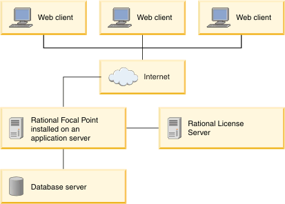

IBM® Rational® Focal Point™ can
be set up in simple environment in which the application is deployed
to an application server. This simple environment setup is best for
organizations with a limited number of users or that are using Rational Focal Point for
evaluation.
Figure 1. Simple installation topology example

In this topology example,
Rational Focal Point is
deployed to an application server. The application server is configured
to work with the database server and the license server. Users can
access
Rational Focal Point from
a web client.